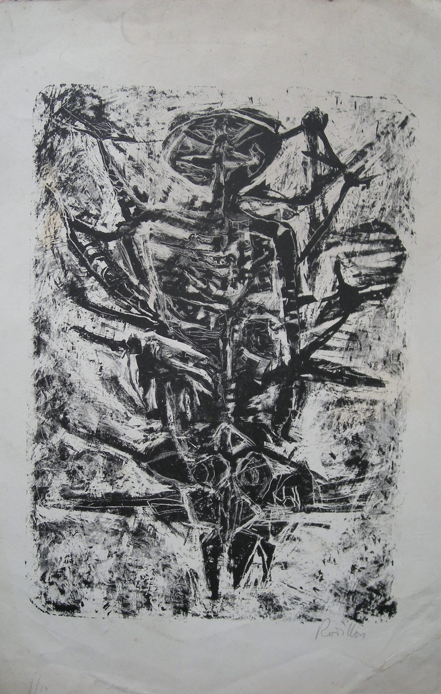

Suzanne Rodillon
1916 – 1988
Artist Biography
Suzanne Rodillon lived a bohemian lifestyle and never married. She was well-connected in the Parisian art scene, though initially ran a business and only turned to painting in 1946 aged thirty. She learned to draw at the Grande Chaumiere but her figures soon took on an anguished, haunted look, referencing totems and primordial feelings and showing a fertile imagination. Rodillon later painted in an abstract expressionist style, though still shot through with Art Brut references and imagery. Her first solo exhibition was in 1956 at Galerie Drouant David, Paris, followed by another that year at Galleria del Naviglio in Milan, Italy. Other solo shows followed at New Vision Gallery in London and Galleria del Cavallino in Venice in 1957, Galerie Les Contemporains in Brussels in 1958 and at the Drian Gallery in London in 1959 and 1960. Mixed shows with the Group “Phases” took place in Lima, Peru and Tokyo in 1958. Despite Rodillon’s burgeoning career and international exhibitions, she abruptly stopped painting in 1966. The work in her studio was sold in 1991 at auction. A brief essay in a catalogue accompanying the sale suggested that her departure from the art world was due to unspecified family obligations. She died in obscurity in 1988 but her work was included in the exhibition ‘Unlisted’ at the Derfner Judaica Museum in New York in 2023, which concentrated on female artists thought to have been unjustly neglected due to their gender/lifestyles.

Untitled